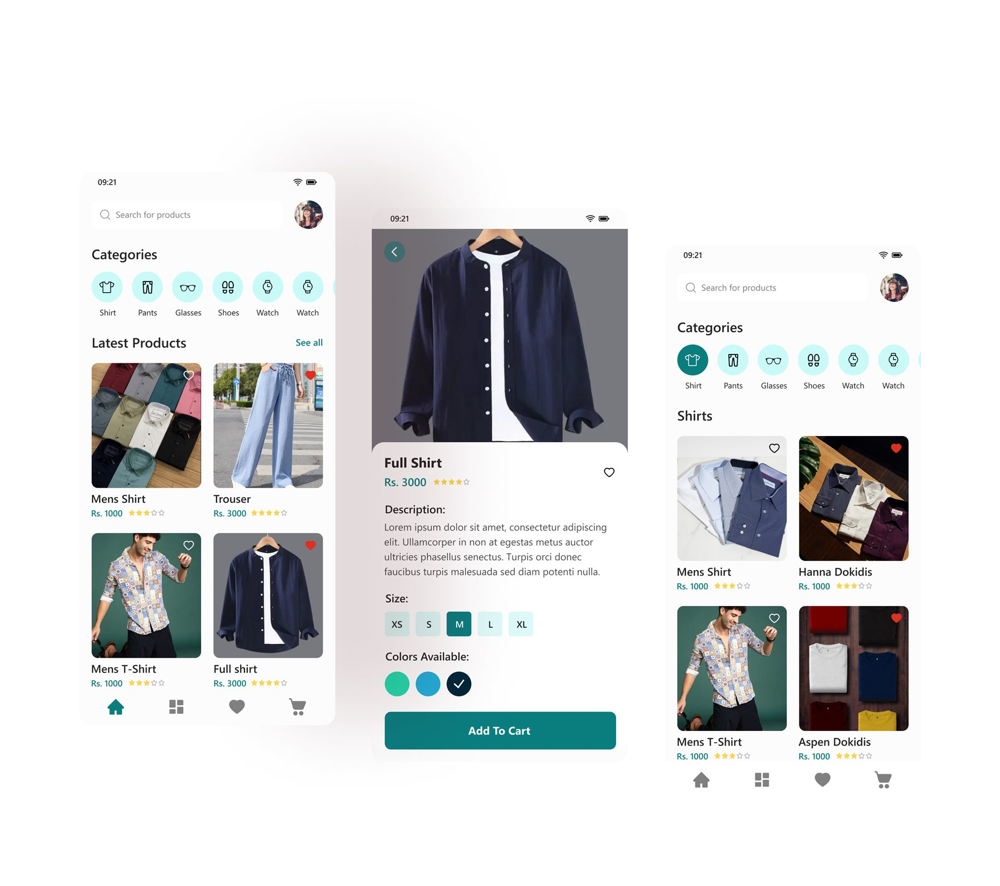
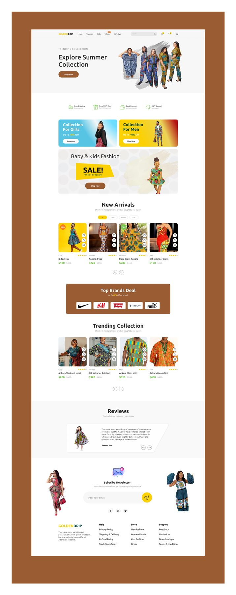
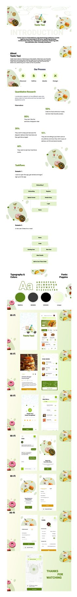
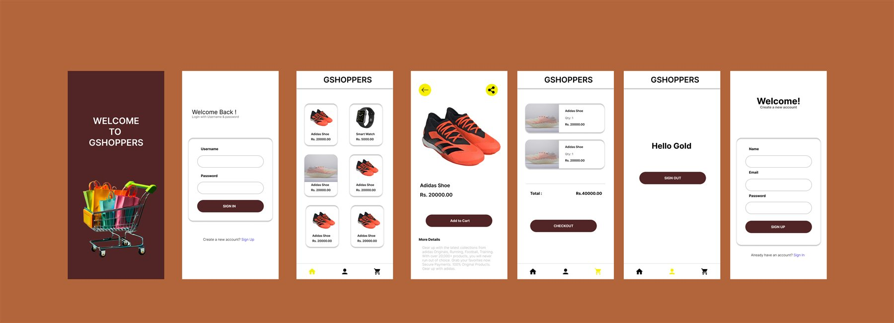
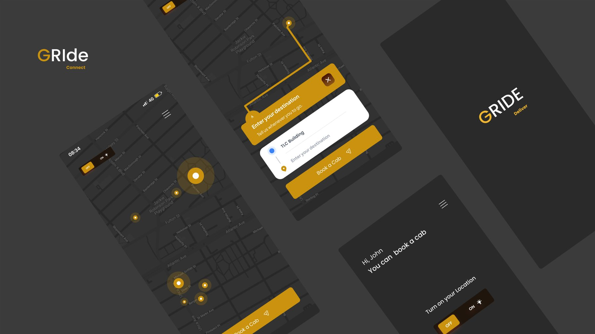
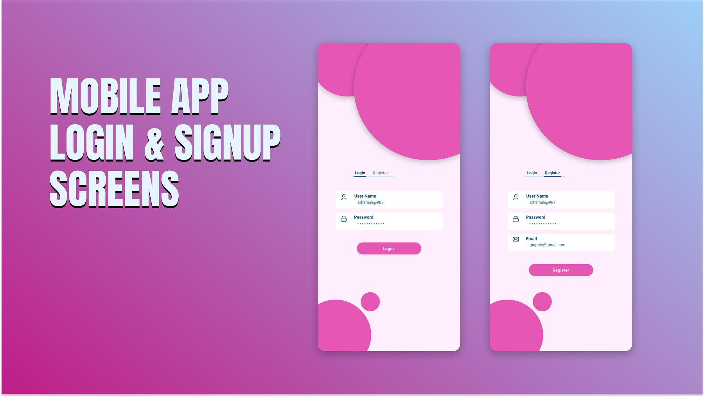

Portfolio · Product thinking
UX Design
Interface concepts across commerce, food delivery, and mobility. The work combines clear information architecture, purposeful interaction, and expressive visual systems.





